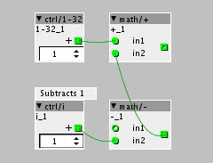

A notch or band reject filter would be really awesome.
Improvements/Wishes for the patcher
lfsaw
#83
The ability to attenuate the min/max value of the knobs by typing
in custom min/max values. (For instance -20/+10 as opposed to -64 / +64
default) micro tuning some of the parameters are key to making really
interesting patches. Especially percussion style sounds.
I'd second that.
Also related, how about a map-object that you give the desired range (which assumes -64..64 at its input) to use in-between, say, an analog read and a float input?
anon5189335
#85
Yeah I have also requested for that feature. But from what I understand from Johannes is that there might be a problem with midi cc values and dynamic object( I like to call them that cause you can set min/max value). if you for example set it too -100 and +100, how should that be indexed to midi cc values which is only 0-127?
Anyway, you can easly make you own versions of the object as they are now.. FOr example I have made different version of ctrl/i that for example goes from 1-4 and 1-8 and 1-16, etc. Instead of 0 to infinite.
{kind=link}
mtyas
#87
I would love a midi learn function for assigning cc to knobs. Even if I do have a load of cheat sheets filled with numbers for all my controllers, it would save me a lot of time.
chaosmoon
#89
-100 to 0 could return CC value 0
0 - 100 could return CC values 0 - 100
Sometimes you dont want the full range.
Good point, but make custom knobs for each patch? I'm for an extra knob object with definable min/max.
Diego
#90
+1 undo
Or even better a history list were changes are listed, saved with the patch so you can always go back even after save or close the project.
anon5189335
#91
Yes sure, there are some issues. But would really love the ctrl/i to be able to be controlled by midi cc. I used it a lot. But that the radios now are cc ontrollable is nice. That is pretty useful. I tried editing the java code, but I used the wrong program. THink I am going to install right program and try again sometime soon.
1-4, 1-8, 1-16, 1-32, 1-64, 1-128 covers most use cases that i have encountered, so it is not so many new versions anyway. I like that I can set min & max so the ctrl/i doesnt run "off the edge". For example if only the first 8 steps of the ctrl/i is used there is no need for it to go to 64000. It is better it just stops at step 8. It will make the patches more "complete", since you can only set values that is actually used... Not so much dialing around in ranges that doesnt really affect anything. That just takes a little bit of the fun away.
but a new object the has min/max is also wlecome... and midi cc assignale is most welcome 
anon5189335
#93
Yes sure
They might come up red in the loader window(or whats it called) but they work.
This is what I have for now:
0-6.axo (785 Bytes)
0-15.axo (787 Bytes)
1-16.axo (787 Bytes)
1-4.axo (785 Bytes)
1-8.axo (762 Bytes)
1-32.axo (787 Bytes)
1-64.axo (787 Bytes)
If you want to use the ones that start from 1 and up to control a muxer(which starts from zero not 1) you can use a little math, so even though it shows 1 it is actually selecting muxer nr 0.

cube48
#95
Pretty, pretty please, add the keyboard shortcut for creating a new patcher object. Ctrl+Shift+N is ideal candidate.
On the Win10 tablet that I use double-tap doesn't work, no matter if I use fingers or stylus. Mouse double-click is fine though. Keyboard shortcut would improve the tablet mode use through on-screen keyboard.
Patching with stylus is really convenient btw.
johannes
#96
available shortcuts to create a new object are 'n' (like in max), ctrl-1 (like in pd) and spacebar
cube48
#97
Thanks a lot and pardon my ignorance. I just assumed there is no shortcut as it's not displayed next to the menu item. Thanks again!
johannes
#99
axoloti/src/main/java/axoloti/utils/Preferences.javafinal int nRecentFiles = 8;
is what you 'd need to change.
philoop
#100
ok johannes thats a little to nerdisch for me, hope 1.0.7 has at least 16 entries:yum:
I am still learning github....
philoop
#101
Patch sharing ..is tooo.complicated!
due to axo and axs sharing aint easy,,,,
something like Patch freeze (max)
would be superior!
btw,more SRAM
may the axo evolve to an krokalotimaeleon..